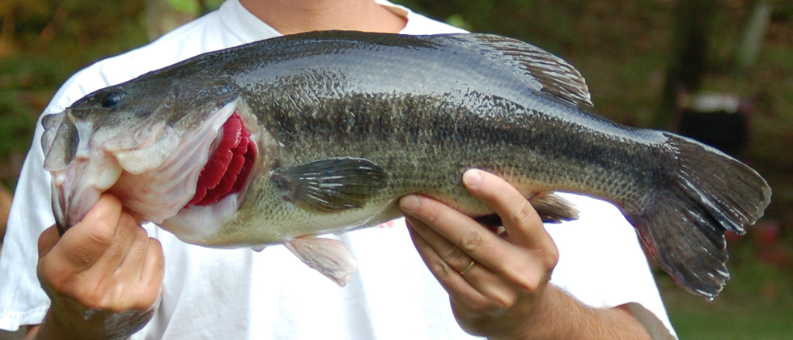
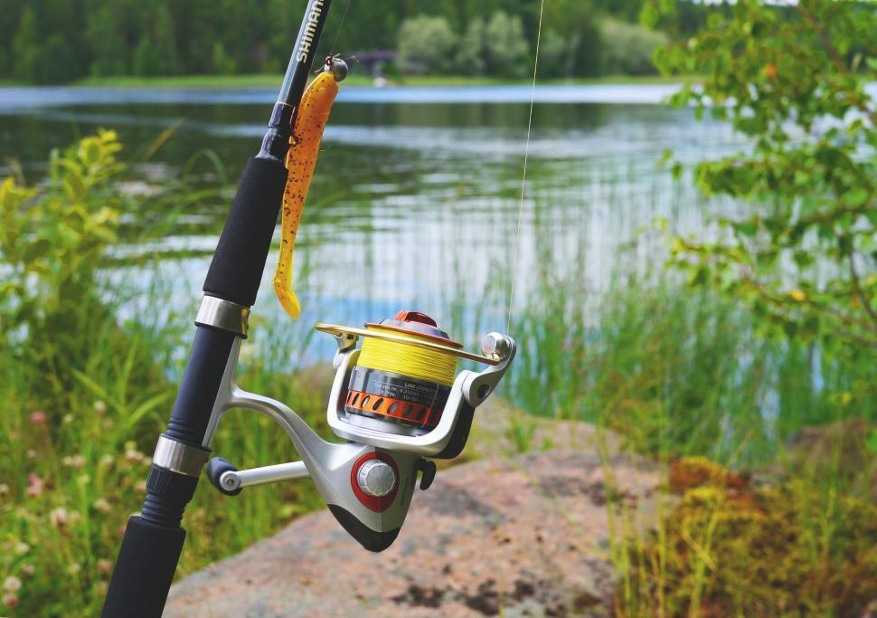

welcome to the fishing website. On this website you will be learning about fish,rods,reels,and lures.Fishing is not an easy sport as it takes a lot of practice, so don't be mad if you are not doing good as again fishing is not an easy sport.


